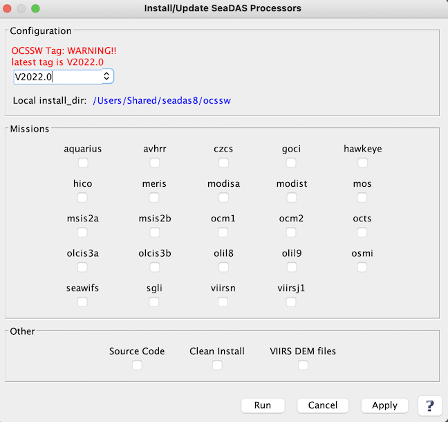

| install_ocssw | |
Installs or updates OCSSW processing package.
Location
Details
Command Line Usage
SeaDAS-OCSSW -> Install/Update OC Processors
Install/Update OC Processors executes install_ocssw which installs or updates the OCSSW package for SeaDAS. When SeaDAS first installs OCSSW package, the menu item would display as "Install OC Processors". Afterwords, it's displayed as "Update OC Processors".
You can access the OCSSW installer GUI from the SeaDAS-OCSSW/Install/Update OC Processors menu. The ocssw install/update GUI initially displays a default window, as shown in the image below, to select installation directory and mission data files to be included in the installation. If the data files of a mission already exists in the system, the checkbox for that mission would be selected in the initial screen. Users can leave it selected for an update or deselect to skip its installation.
|  |
| UI Element Name | Type | Description | Required/Optional | Default Value |
| install_dir | string | destination directory for install. Defaults to $OCSSWROOT or "$HOME/ocssw" if neither are given. | Optional. The default installation directory is $USER_HOME/ocssw. | $OCSSWROOT if it exists, otherwise "$HOME/ocssw" |
| aquarius | boolean | install Aquarius files | Optional | false |
| avhrr | boolean | install AVHRR files | Optional | false |
| czcs | boolean | install CZCS files | Optional | false |
| goci | boolean | install GOCI files | Optional | false |
| hawkeye | boolean | install HAWKEYE files | Optional | false |
| hico | boolean | install HICO files | Optional | false |
| meris | boolean | install MERIS files | Optional | false |
| aqua | boolean | install MODIS Aqua files | Optional | false |
| terra | boolean | install MODIS Terra files | Optional | false |
| mos | boolean | install MOS files | Optional | false |
| msis2a | boolean | install MSI S2A files | Optional | false |
| msis2b | boolean | install MSI S2B files | Optional | false |
| ocm1 | boolean | install OCM1 files | Optional | false |
| ocm2 | boolean | install OCM2 files | Optional | false |
| octs | boolean | install OCTS files | Optional | false |
| olcis3a | boolean | install OLCI S3A files | Optional | false |
| olcis3b | boolean | install OLCI S3B files | Optional | false |
| olil8 | boolean | install OLI L8 files | Optional | false |
| olil9 | boolean | install OLI L9 files | Optional | false |
| osmi | boolean | install OSMI files | Optional | false |
| seawifs | boolean | install SeaWiFS files | Optional | false |
| sgli | boolean | install SGLI files | Optional | false |
| viirsn | boolean | install VIIRSN files | Optional | false |
| viirsj1 | boolean | install VIIRSJ1 files | Optional | false |
| Source Code | boolean | install source code | Optional | false |
| Clean Install | boolean | do a clean install by deleting the install directory first, if it exists | Optional | false |
| VIIRS DEM Files | boolean | install VIIRS DEM files needed for geolocation | Optional | false |
| UI Element Name | Type | Description |
| Browser Button | Button | Selects installation directory |
| Run | Button | Executes install_ocssw with arguments provided in the UI. |
| Cancel | Button | Closes current processor GUI. |
| Apply | Button | Makes current arguments effective. |
| ? | Button | Displays the help content of the current command. |
WARNING: --tag is required to get the proper bundle list.
usage: install_ocssw [-h] [--version] [--list_tags] [--installed_tag] [--status] [--update] [-t TAG] [-i INSTALL_DIR]
[-b BASE_URL] [-l LOCAL_DIR] [-s SAVE_DIR] [-c] [--wget] [-a ARCH] [-v] [--bin] [--opt] [--src]
[--luts] [--viirs_l1_bin] [--root] [--opt_src] [--afrt] [--aquaverse] [--avhrr] [--aviris]
[--common] [--czcs] [--eval] [--goci] [--hawkeye] [--hico] [--l5tm] [--l7etmp] [--meris] [--misr]
[--modisa] [--modist] [--mos] [--msis2a] [--msis2b] [--oci] [--ocia] [--ocip] [--ocis] [--ocm1]
[--ocm2] [--ocrvc] [--octs] [--olcis3a] [--olcis3b] [--olil8] [--olil9] [--osmi] [--prism]
[--sabiamar] [--seawifs] [--sgli] [--spexone_remotap] [--viirsdem] [--viirsj1] [--viirsj2]
[--viirsn] [--wv3] [--aerosol] [--cloud] [--benchmark] [--viirs_l1_benchmark] [--direct_broadcast]
[--seadas] [--odps] [--viirs_l1] [--all]
Install OCSSW bundles
options:
-h, --help show this help message and exit
--version print this program's version
--list_tags list the tags that exist on the server
--installed_tag list the currently installed tag
--status compare the main tag manifest to the files in the bundle directories
--update update all installed bundles to the tag given
-t TAG, --tag TAG tag that you want to install
-i INSTALL_DIR, --install_dir INSTALL_DIR
root directory for bundle installation (default=$OCSSWROOT)
-b BASE_URL, --base_url BASE_URL
remote url for the bundle server
-l LOCAL_DIR, --local_dir LOCAL_DIR
local directory to use for bundle source instead of the bundle server
-s SAVE_DIR, --save_dir SAVE_DIR
local directory to save a copy of the downloaded bundles
-c, --clean delete extra files in the destination directory
--wget use wget for file download
-a ARCH, --arch ARCH use this architecture instead of guessing the local machine (linux_64 macosx_intel odps)
-v, --verbose increase output verbosity
--bin install binary executables
--opt install 3rd party programs and libs
--src install source files
--luts install LUT files
--viirs_l1_bin install VIIRS binary executables subset
--root install random files in the root dir files
--opt_src install 3rd party library sources files
--afrt install Ahmad-Fraser RT data files
--aquaverse install Algorithm based on Mixture Density Networks files
--avhrr install AVHRR files
--aviris install AVIRIS files
--common install common files
--czcs install CZCS files
--eval install evaluation files
--goci install GOCI files
--hawkeye install Hawkeye files
--hico install HICO files
--l5tm install l5tm files
--l7etmp install l7etmp files
--meris install MERIS files
--misr install MISR files
--modisa install MODIS AQUA files
--modist install MODIS TERRA files
--mos install MOS files
--msis2a install MSI Sentinel 2A files
--msis2b install MSI Sentinel 2B files
--oci install PACE OCI files
--ocia install PACE OCI AVIRIS files
--ocip install PACE OCI PRISM files
--ocis install PACE OCI Simulated data files
--ocm1 install OCM1 files
--ocm2 install OCM2 files
--ocrvc install OC Virtual Constellation files
--octs install OCTS files
--olcis3a install OLCI Sentinel 3A files
--olcis3b install OLCI Sentinel 3B files
--olil8 install OLI Landsat 8 files
--olil9 install OLI Landsat 9 files
--osmi install OSMI files
--prism install PRISM files
--sabiamar install Sabiamar files
--seawifs install SeaWiFS files
--sgli install SGLI files
--spexone_remotap install SPEX One RemoTAP files
--viirsdem install VIIRS Digital Elevation files
--viirsj1 install VIIRS JPSS1 files
--viirsj2 install VIIRS JPSS2 files
--viirsn install VIIRS NPP files
--wv3 install WV3 files
--aerosol install aerosol processing with dtdb files
--cloud install cloud properties processing files
--benchmark install benchmark MOSIS Aqua, level0 -> level3 Mapped files
--viirs_l1_benchmark install VIIRS benchmark data files
--direct_broadcast toggle on bundles needed for MODIS direct broadcast
--seadas toggle on the base set of bundles for SeaDAS
--odps toggle on the base set of bundles for ODPS systems
--viirs_l1 install everything to run and test the VIIRS executables
--all toggle on all satellite bundles